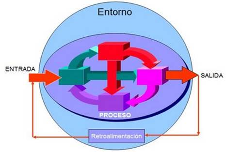

La teoría General de Sistemas (TGS) se presenta como una forma sistemática y científica de aproximación y representación de la realidad y, al mismo tiempo, como una orientación hacia una práctica estimulante para formas de trabajo multidisciplinarias.
La Teoría General de Sistemas (TGS) tiene su origen en los mismos orígenes de la filosofía y la ciencia. La palabra Sistema proviene de la palabra systêma, que a su vez procede de synistanai (reunir) y de synistêmi (mantenerse juntos).
Específicamente se le atribuyen a George Wilhem Friedrich Hegel (1770'–'1831) el planteamiento de las siguientes ideas:
La teoría de los sistemas enfatiza la importancia de la retroalimentación y el aprendizaje continuo. Las empresas pueden aplicar esto mediante la implementación de sistemas de retroalimentación y evaluación para monitorear el rendimiento y realizar ajustes según sea necesario.

Un sistema es un conjunto de elementos interrelacionados entre si para lograr un mismo objetivo. Los componentes de sistema son: